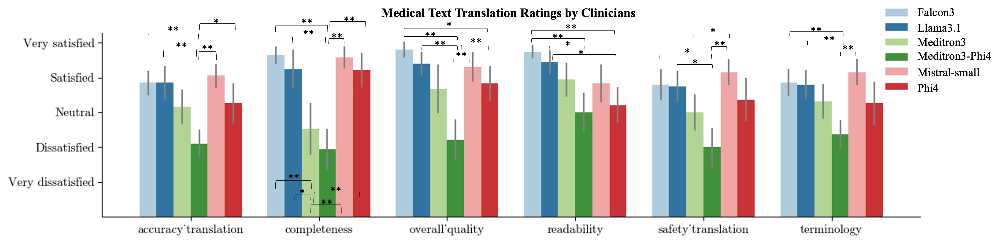
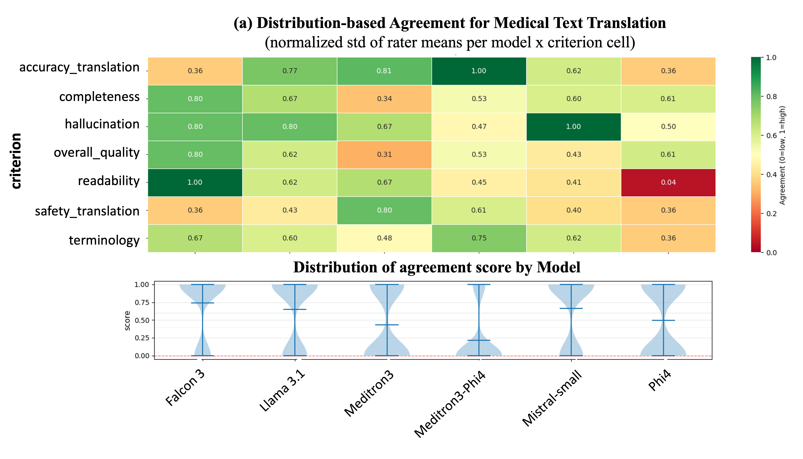
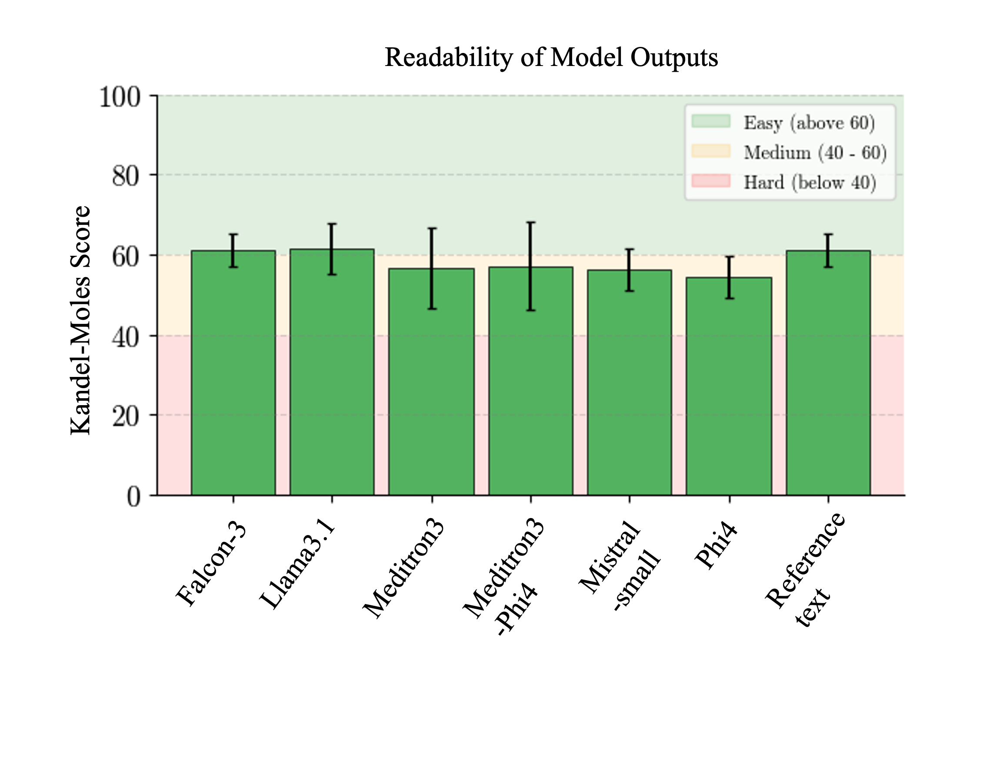
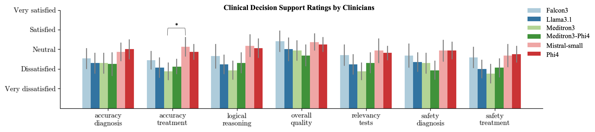
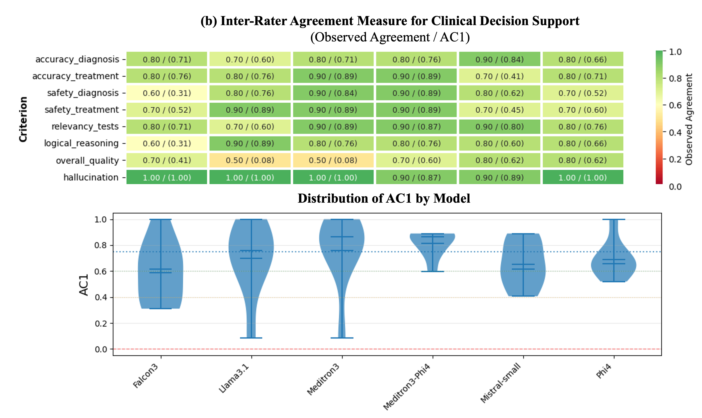

Paper Overview
This paper evaluates six clinical NLP tasks using small-scale open-source large language models. We benchmark performance across tasks critical to clinical workflows: information extraction, translation, summarization, patient-facing text generation and clinical decision support.
🔬 Background
Large language models (LLMs) have shown promise in health care, but their usage and deployment in hospitals is constrained by data protection requirements, limited local computing resources, and a lack of validation on real-world, non-English clinical data. Smaller open-source LLMs that can be deployed locally may offer a practical alternative, but their clinical utility remains insufficiently evaluated.
🎯 Objective
This study aimed to evaluate the feasibility of small, locally deployable open-source LLMs for clinically relevant tasks in a resource-constrained hospital setting and to propose a reproducible framework for institution-specific evaluation before deployment.
⚙️ Methods
We evaluated six open-source LLMs ranging from 8B to 24B parameters (from the Mistral, Phi4, Falcon3, Llama3.1, and Meditron3 families) in a zero-shot setting across seven tasks covering four clinical use cases: information extraction, medical text translation, text generation, and clinical decision support. The evaluation used de-identified French clinical data from a Swiss tertiary hospital, including discharge letters, clinical notes and structured electric health records. Performance was assessed using task-appropriate metrics, including precision, recall, macro-F1 score, embedding-based semantic similarity, penalized ROUGE, readability indices, and structured clinician review.
| Model | Size | Prompting | Notes |
|---|---|---|---|
| Mistral-Small | 24B | Zero-shot | Open Source |
| Phi4 | 14B | Zero-shot | Open Source |
| Falcon3 | 10B | Zero-shot | Open-source |
| Llama-3.1 | 8B | Zero-shot | Open-source |
| Meditron3-Phi4 | 14B | Zero-shot | Open-source |
| Meditron3 | 8B | Zero-shot | Open-source |
📊 Results Summary
Model performance was highly task dependent. In the simplest retrieval task (needle-in-the-haystack), several models performed strongly, with Llama3.1 achieving an F1 score of 99.81% and Mistral-small 99.71%. In contrast, performance was poor for more clinically complex tasks. In PHI detection, the best-performing LLMs achieved only modest overall macro-F1 scores (0.33–0.34), substantially below a fine-tuned RoBERTa baseline (0.94). In immune-related adverse event extraction, the highest overall macro-F1 score was 0.35 (Phi4). For medical text translation, Phi4 ranked highest in embedding-based evaluation, whereas Meditron3-Phi4 performed worst and showed frequent truncation-related failures; clinician review also identified hallucinations in 55% of its outputs. Summarization quality was low across all models, with the best penalized ROUGE score reaching only 0.169 (Llama3.1). In both patient-friendly discharge notes generation and clinical decision support, clinician ratings generally ranged from dissatisfied to neutral, and no model achieved consistently satisfactory performance.
💡 Conclusion
Small open-source LLMs appear feasible for simple retrieval-oriented tasks in local hospital deployments but are currently inadequate for more complex applications requiring robust reasoning, accurate summarization, reliable de-identification, or clinical decision support. These findings highlight the importance of locally grounded, use-case-specific evaluation before clinical adoption and support the need for institution-level benchmarking frameworks for safe deployment.
[1] Personal Health Information Extraction
Named Entity Recognition • Privacy • De-identification
📝 Task Description
Building on the assessment of information retrieval, we targeted eight distinct PHI entities: 'Name', 'Age', 'Address', 'Telephone', 'Date', 'Time', and 'ID' selected from a subset of the HIPAA guidance. This evaluation aimed to assess the LLMs' effectiveness in identifying sensitive personal data embedded within the clinical narratives, a foundational capability for developing automated de-identification pipelines to limit privacy risks when sharing medical documentation across institutions or departments. We used an annotated NER dataset of 3687 records including discharge letters, consultation letters, lab reports, and other clinical documents to test the performance of the LLMs.
📏 Evaluation Criteria
- Entity-level F1
📊 Results
| Model | NAME | DATE | TIME | ID | AGE | TEL | ADDRESS | OVERALL-F1 (95% CI) |
|---|---|---|---|---|---|---|---|---|
| Mistral-small | 0.84 | 0.11 | 0.83 | 0.26 | 0.53 | 0.06 | 0.08 | 0.33 (0.32-0.35) |
| Phi4 | 0.00 | 0.77 | 0.88 | 0.51 | 0.53 | 0.06 | 0.01 | 0.34 (0.32-0.36) |
| Meditron4-Phi4 | 0.00 | 0.89 | 0.90 | 0.46 | 0.43 | 0.06 | 0.01 | 0.34 (0.32-0.36) |
| Falcon3 | 0.00 | 0.90 | 0.87 | 0.31 | 0.53 | 0.06 | 0.04 | 0.34 (0.31-0.35) |
| Llama3.1 | 0.00 | 0.49 | 0.61 | 0.16 | 0.26 | 0.01 | 0.04 | 0.20 (0.17-0.22) |
| Meditron3 | 0.00 | 0.00 | 0.00 | 0.00 | 0.00 | 0.00 | 0.00 | 0.00 (0.00-0.00) |
| Fine-tuned RoBERTA | 0.95 | 0.99 | 1.00 | 0.81 | 0.74 | 1.00 | 0.79 | 0.94 (0.91-0.96) |
[2] Immuno-Related Adverse Event Extraction
Adverse Events • Immunotherapy • Pharmacovigilance
📝 Task Description
To assess the LLMs' performance in a realistic clinical context, the third task focused on the extraction of immune-related adverse events (irAEs) from discharge summaries originating from our hospital's oncology department. The targeted irAEs comprised: colitis, thyroiditis, pneumonitis, skin-related effects, hepatitis, hypophysitis, rheumatological manifestations, cardiac toxicities, neurological complications, pancreatitis, nephrological issues, and diabetes. This assessment aimed to test the LLMs' ability to accurately identify and retrieve specific, clinically significant information from complex medical narratives, mirroring a common requirement in routine oncological practice. We used an annotated irAE dataset of 400 discharge letters to test the performance of the LLMs.
📏 Evaluation Criteria
- Event detection F1
📊 Results
| Model | Cardiac | Colitis | Diabetes | Hepatitis | Hypophysitis | Nephrological | Neurological | Pancreatitis | Pneumonities | Rheumatological | Skin | Thyroiditis | Overall F1 (95% CI) |
|---|---|---|---|---|---|---|---|---|---|---|---|---|---|
| Mistral-small | 0.36 | 0.46 | 0.25 | 0.38 | 0.31 | 0.08 | 0.08 | 0.55 | 0.46 | 0.07 | 0.21 | 0.30 | 0.29 (0.20 - 0.35) |
| Phi4 | 0.33 | 0.54 | 0.55 | 0.36 | 0.32 | 0.22 | 0.11 | 0.67 | 0.53 | 0.09 | 0.20 | 0.34 | 0.35 (0.25 - 0.42) |
| Meditron3-Phi4 | 0.40 | 0.53 | 0.17 | 0.33 | 0.31 | 0.35 | 0.11 | 0.00 | 0.43 | 0.08 | 0.26 | 0.29 | 0.26 (0.19 - 0.32) |
| Falcon3 | 0.31 | 0.44 | 0.00 | 0.29 | 0.12 | 0.24 | 0.03 | 0.57 | 0.29 | 0.00 | 0.18 | 0.31 | 0.23 (0.15 - 0.28) |
| Llama3.1 | 0.00 | 0.54 | 0.00 | 0.18 | 0.12 | 0.21 | 0.06 | 0.67 | 0.22 | 0.00 | 0.29 | 0.24 | 0.21 (0.12 - 0.26) |
| Meditron3 | 0.40 | 0.45 | 0.00 | 0.09 | 0.17 | 0.29 | 0.00 | 0.40 | 0.00 | 0.00 | 0.18 | 0.14 | 0.17 (0.08 - 0.25) |
[3] Medical Text Translation
Jargon-to-Plain Language • Health Literacy
📝 Task Description
As demographics shift toward greater linguistic diversity, the translation of discharge summaries into patients' native languages has become a clinical and administrative imperative. This practice is necessary not only to bridge communication gaps and maintain continuity of care but also to ensure institutional compliance with legal mandates and accurate billing procedures. However, the automated translation of these documents presents a significant challenge. This difficulty is primarily attributed to the requirement for precise and contextually accurate translation of specialized medical terminology. In this use case, we focused on the models' ability to accurately translate clinical discharge letters from French to English using a randomly selected dataset of 20 discharge letters collected from different clinical services.
📏 Evaluation Criteria
- Clinician-rated adequacy (Likert 1-5)
- Emebedding Similarity
📊 Results

Figure: Comparison of model performance on medical text translation task evaluated by clinicians.

Figure: The distribution-based agreement for each model-criterion combination. The agreement varied in each combination, while for the readability on the Falcon3 model (rated between 'satisfied' and 'very satisfied'), the 'accuracy of translation' on the Meditron3-Phi4 model (rated 'dissatisfied') and hallucination on the Mistral-small (rated 'no hallucination') model reached highest score (score 1, perfect consensus). The clinician's agreement on the readability of the Phi4 model is the lowest.
[4] Discharge Letter Summary
Summarization • Clinical Handover
📝 Task Description
To test how well the LLMs could summarize key events, diagnoses, and treatments from patient health records, reflecting the real-world challenge clinicians face in managing vast amounts of patient information and medical research. For this evaluation, we randomly selected 40 discharge letters from diverse clinical services and prompted the LLMs to generate a summary of approximately 300 words.
📏 Evaluation Criteria
- ROUGE-L for content coverage
📊 Results
| Model | ROUGE | Text length (in words) | Length Penalty | Pen. ROUGE (95% CI) |
|---|---|---|---|---|
| Mistral-small | 0.184 (0.14–0.22) | 391 (348.98–432.06) | 0.833 (0.71–0.95) | 0.156 (0.11–0.19) |
| Phi4 | 0.151 (0.11–0.19) | 368 (345.52–389.53) | 0.927 (0.88–0.96) | 0.141 (0.09–0.18) |
| Meditron3-Phi4 | 0.190 (0.12–0.25) | 445 (353.49–536.18) | 0.727 (0.54–0.91) | 0.114 (0.06–0.16) |
| Falcon3 | 0.107 (0.08–0.13) | 248 (220.657–276.08) | 0.998 (0.99–1.00) | 0.107 (0.08–0.13) |
| Llama3.1 | 0.180 (0.14–0.22) | 316 (275.98–356.53) | 0.941 (0.89–0.99) | 0.169 (0.13–0.21) |
| Meditron3 | 0.287 (0.17– 0.40) | 412 (279.78–545.16) | 0.730 (0.55–0.90) | 0.144 (0.09–0.19) |
[5] Patient-Friendly Discharge Letter Generation
Patient Communication • Empathy • Readability
📝 Task Description
The main goal was to translate key clinical information—including diagnoses, treatments, and follow-up instructions—into language understandable to patients with diverse educational levels. There is evidence that this functionality can enhance patient-clinician communication, patient engagement, and continuity of care. For the experiment, we randomly selected 14 de-identified discharge letters from the internal medicine department. Although the prompt was designed in English for use with multiple languages, the evaluation was conducted in French, which were subsequently evaluated for clinical accuracy and clarity by two native French-speaking clinicians.
📏 Evaluation Criteria
- Kandel-Moles index
- Clinician-rated adequacy (Likert 1-5)
📊 Results

Figure: Kandel-Moles index comparison across models.
[6] Clinical Decision Support
Treatment Recommendations • Evidence Retrieval • Clinical Reasoning
📝 Task Description
This use case assessed the LLMs' capabilities in clinical decision support, specifically their ability to generate differential diagnoses and propose treatment plans. We consider this task to be one of the most challenging assessments of LLM performance in the medical domain. For this task, we intentionally excluded discharge letters and instead provided the LLMs with curated prompts containing comprehensive patient information, including anamnesis, consultation notes, laboratory results, vital signs, and results of clinical examinations. This design aimed to simulate a real-world clinical decision-making scenario in which the diagnosis has not yet been formally established or documented. The objective was to evaluate the models’ ability to integrate heterogeneous clinical data to generate plausible differential diagnoses and suggest appropriate management strategies. We randomly selected 10 de-identified medical cases from the Neurology service for this task.
📏 Evaluation Criteria
- Clinician-rated adequacy (Likert 1-5)
📊 Results

Figure: Model performance comparison on the clinical decision support task.

Figure: Clinicians' agreements scores across models.
👥 Author Affiliations
| Author | Affiliation |
|---|---|
| H.A. Xu, PhD | Biomedical Data Science Center, Lausanne University Hospital, Lausanne, Switzerland |
| R. Pythoud, Msc | Biomedical Data Science Center, Lausanne University Hospital, Lausanne, Switzerland |
| C.W. Thorball, PhD | Infectious Diseases Service, Lausanne University Hospital, Lausanne, Switzerland |
| G. Carra, PhD | Biomedical Data Science Center, Lausanne University Hospital, Lausanne, Switzerland |
| B. Kulynych, PhD | Biomedical Data Science Center, Lausanne University Hospital, Lausanne, Switzerland |
| J. Despraz, Msc | Biomedical Data Science Center, Lausanne University Hospital, Lausanne, Switzerland |
| C. Galland-Decker, MD | Clinical Informatics Unit, Lausanne University Hospital, Lausanne, Switzerland |
| E. Maslias, MD | Department of Clinical Neurosciences, Lausanne University Hospital and University of Lausanne, Lausanne, Switzerland |
| E. Baudson | Department of Clinical Neurosciences, Lausanne University Hospital and University of Lausanne, Lausanne, Switzerland |
| T. Brahier, MD | Infectious Diseases Service, Lausanne University Hospital, Lausanne, Switzerland |
| V. Kraege, MD eMBA | Innovation and medical Research Directorate, Lausanne University Hospital, Lausanne, Switzerland Faculty of Biology and Medicine, University of Lausanne, Lausanne, Switzerland |
| A.C. de Sousa Teixeira, MD | Faculty of Biology and Medicine, University of Lausanne, Lausanne, Switzerland |
| C. Fidalgo, MD | Division of Internal Medicine, Lausanne University Hospital and University of Lausanne, Lausanne, Switzerland |
| F. Berthaudin, MD | Division of Internal Medicine, Lausanne University Hospital and University of Lausanne, Lausanne, Switzerland |
| A. Madina, Msc | IT Department, Lausanne University Hospital, Lausanne, Switzerland |
| S. Zoergiebel, Msc | IT Department, Lausanne University Hospital, Lausanne, Switzerland |
| F. Bastardot, MD MSACI | Clinical Informatics Unit, Lausanne University Hospital, Lausanne, Switzerland |
| A. Stravodimou, MD | Department of Oncology, Medical Oncology Service, Lausanne University Hospital, Lausanne |
| M. Mean, MD PD-MER | Division of Internal Medicine, Lausanne University Hospital and University of Lausanne, Lausanne, Switzerland |
| J. Fellay, MD PhD | Biomedical Data Science Center, Lausanne University Hospital, Lausanne, Switzerland School of Life Sciences, EPFL, Lausanne, Switzerland |
| P. Ryvlin, MD | Department of Clinical Neurosciences, Lausanne University Hospital and University of Lausanne, Lausanne, Switzerland |
| J.L. Raisaro, PhD | Biomedical Data Science Center, Lausanne University Hospital, Lausanne, Switzerland |